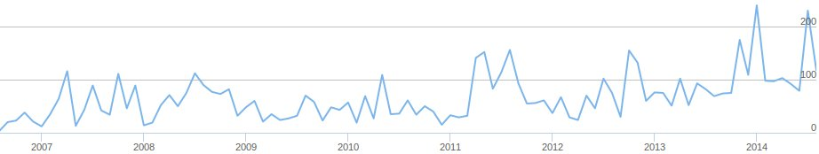
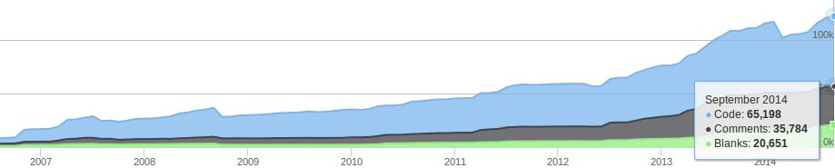
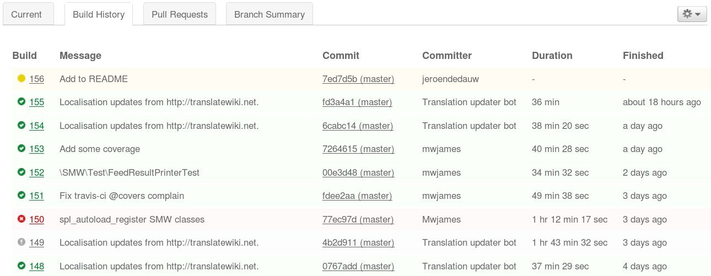
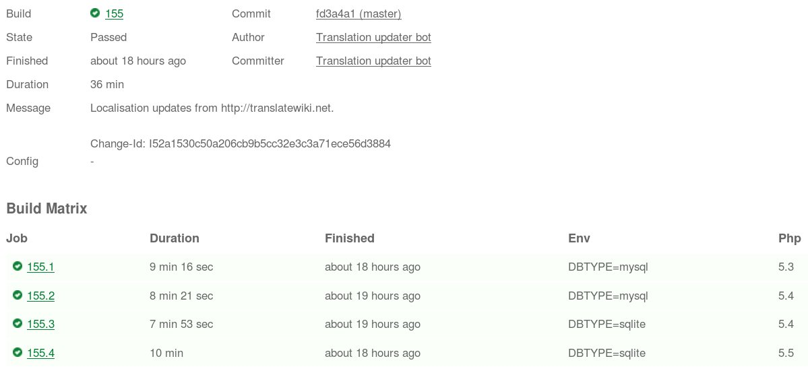
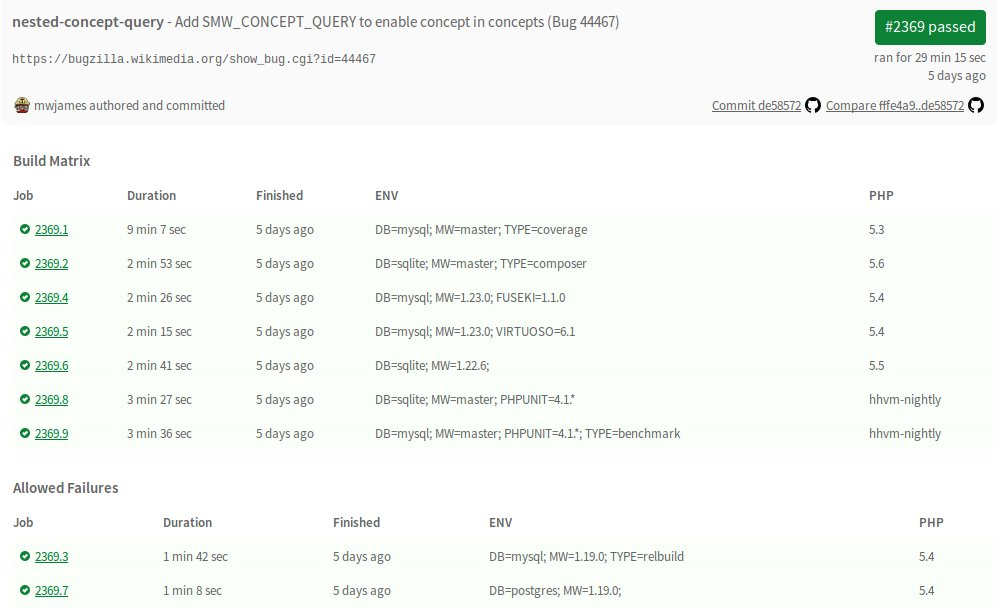
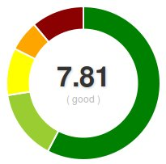
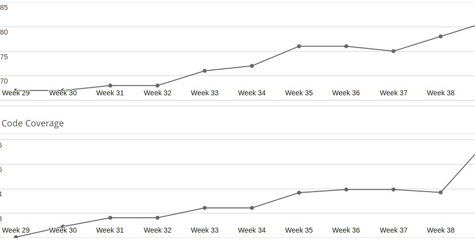

Yearly SMW overview
Presentation by @JeroenDeDauw
bit.ly/smw-2014
SMWCon Fall 2014, Vienna
Overview
- Status of the SMW project
- New in 1.9 and 2.0
- Upcoming features
- Contributing to SMW
Last 12 months & current status
Releases
- 1.9.0 (+ 1.9.0.1 & 1.9.0.2)
- 1.9.1 (+ 1.9.1.1)
- 1.9.2
- 2.0
7 releases, including 2 major ones
Semver compliance
MAJOR.MINOR.PATCH
2.0.0
Want only bugfxies? ➜ 2.0.x
New features but no b/c breaks? ➜ 2.x
Codebase
~24 developers last year, 79 total
~1500 code changes (up ~50%) 
Lines of code
58k ➜ 65k  "Mature, well-established codebase"
Tests
0% ➜ ~20% ➜ 66%
~2500 tests
Continuous integration!



 
Community
~2100 mails on semediawiki-user
~500 mails on semediawiki-devel
~5700 edits and ~1200 new pages on semantic-mediawiki.org
174 issues , including >52 bugs and >21 feature requests
SMW 1.9.x
SMW 2.0
SMW 2.1
Contributing to the project

bit.ly/2014-smw
Your ideas and support are welcome!
Special:Links
- View slides bit.ly/smw-2014
- Slides on GitHub (CC BY-SA 3.0 licensed)
- semantic-mediawiki.org
- @SemanticMW on Twitter
Special:Attribution
- Slides: CC BY-SA 3.0, Jeroen De Dauw
- Slide engine: reveal.js, Copyright (C) 2013 Hakim El Hattab